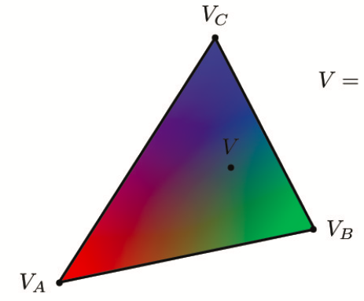

Overview
In this project, we implemented a rasterizer that can supersample images, transform them, and map colors and textures. We implemented antialiasing techniques throughout as well, to make our images more smooth and realistic. What was most interesting to learn during this was how many different techniques there are to rendering images and what tradeoffs are present between them all to make the images look more realistic. It's fascinating to think and learn about the various applications of each of these concepts in practice - whether it be the use of mipmap for more cost efficient and realistic-looking texture mapping in video games / animation, or the use of interpolation for taking creating more smoothly rendered images from different types of samples.
Section I: Rasterization
Part 1: Rasterizing single-color triangles
To rasterize triangles, we iterate through the box boundary for the triangle we were looking at, and we compute whether or not the center of each pixel (calculated by adding 0.5 to x and y coordinate) is contained within or on the edge of the triangle using the point-in-triangle test. If it is, we color in the pixel with the given color, otherwise, it's left blank. We compute if a point is in the triangle by using by taking the coordinate and 2 adjacent vertices and computing (-x + vx0) * (vy1 - vy0) + (y - vy0) * (vx1 - vx0) for each pair of vertices. We then check that all the results are of the same sign. Because we created a box boundary, which spans from the minimum and maximum x and y values of the triangle vertices, we only iterate over the pixels that are in the bounding box. An example of an algorithm that has a worse performance is one that iterates over every element in the image in order to rasterize the triangle. This has worse performance, because if the bounding box is smaller than the size of the image, in this case we encounter significantly more points to achieve the same result -- this is why the bounding box is important!
Part 2: Antialiasing triangles
Our supersampling algorithm was similar to part 1, but we added two more for loops that each increment to sqrt(sampling_rate) to represent the supersample offset within a pixel. The algorithm essentially walks through each pixel and adds each supersample in that pixel to the sample buffer. For example, if there were 4 supersamples within a pixel, the sample buffer would look like [sample_00, sample_01, sample_02, sample_03, sample_10, sample_11...]. Supersampling is useful because it can reduce aliasing by averaging out values of pixels in the given image. Out loop set-up and calculating the centers of the supersamples looked like this (pseudocode): for x in range(minX, maxX + 1) { for y in range(minY, maxY + 1) { for i in range(0, sqrt(sample_rate)) { for j in range(0, sqrt(sample_rate)){ x_coor = x + ((1 + 2 * i) / (2 * sqrt(sample_rate))); y_coor = y_coor = y + ((1 + 2 * j) / (2 * sqrt(sample_rate))); ...}}}} Since pixel may consist of different colors, representing the pixel as a given color depending on where it's sampled would not be an accurate representation of the pixel. As such every part of a pixel might actually be within a triangle, so checking multiple parts of a pixel can give you a more fine tuned result. The modifications we made to the rasterize pipeline in the process was to ensure the sample_buffer was first sized up by sample_rate. Then, before outputting to the frame buffer, we read in sample_rate adjacent values from the sample_buffer at a time and average the values to determine the pixel value. As you can see with the images below with sample_rates 1, 4, and 16 respectively, the color values get smoothed and averaged out along the edges as we increase the sample rate, as we are able to more accurately represent the sample space with a greater number of sampled points.

Part 3: Transforms
Section II: Sampling
Part 4: Barycentric coordinates
Barycentric coordinates are a coordinate system based on the three vertices of a triangle and is used as weights. Barycentric coordinates are typically used a method by which we perform linear interpolation across the space. Using the values at the vertices, along with the distances between these vertices, we can create a weighted "map" within the triangle to accurately and proportionally interpolate every point within the triangle space represented within the triangle boundaries. For vertices a, b, c, a point p = alpha * a + beta * b + gamma * c, where alpha, beta, and gamma are the barycentric coordinates.alpha = (-(x_coor - x1) * (y2 - y1) + (y_coor - y1) * (x2 - x1)) / (-(x0 - x1) * (y2 - y1) + (y0 - y1) * (x2 - x1)). beta = (-(x_coor - x2) * (y0 - y2) + (y_coor - y2) * (x0 - x2)) / (-(x1 - x2) * (y0 - y2) + (y1 - y2) * (x0 - x2)). gamma = 1 - alpha - beta. Look at the first image below for an example of what each point in the triangle would look like if one vertex was all green, one all blue, and one all red. The second image is a screenshot of test7.svg

Part 5: "Pixel sampling" for texture mapping
Pixel sampling is the method by which you gather your pixel data from the original image and choose which pixels to represent and interpolate to reconstruct the image. We used it to accurately scale and model our textures from the given texture information. In our project, we implemented nearest and bilinear sample methods. For the nearest pixel sampling method, we simply found the closest texture map values to our current x and y values (for the uv coordinate). We scaled the x and y values by the width and height of the image, respectively, so make sure they ultimately mapped to values on the correct scale. For the bilinear sample method, we found the 4 nearest points along the edge of a box boundary around which we interpolated. The vertices of this box were centered around our given uv coordinate, which is why we found rounded both the x and y coordinates to floor and ceil them. In order to interpolate, we first performed two horizontal interpolations between bottom two points, the the top two points. Then, we took those two resultant vectors and interpolated them with each other, in effect interpolating them vertically. This is how we computed the bilinear interpolation! In this part, we again used barycentric coordinates to determine the texture within points of a triangle. For a distance x and vertices v0 and v1, linear interpolation is v0 + x(v1 - v0). There will probably be a large difference between the two sampling methods when there is a lot of change in the image, like color or small detailing. For nearest pixel sampling, small details like a strand of hair and color changes might appear block-y or not show up at all because we simply use the value of the nearest texel. Aliasing becomes a problem as there is an abrupt jump between texels. With bilinear filtering, the color changes from one texel to the next are smoother since values are weighted out. Look at the 4 images below which show nearest pixel sampling at a supersample rate of 1, bilinear sampling at a supersample rate of 1, nearest pixel sampling at a supersample rate of 16, and bilinear sampling at a supersample rate of 16 respectively. With nearest pixel, the fine detailing of the line doesn't show up well.
Part 6: "Level sampling" with mipmaps for texture mapping
Level sampling is where you can take an image and downsample depending on the depth of the subject from the viewer's subject. Depending on how much minification is happening, you pick a level to sample from. Level 0 would be the full resolution texture (which is typically represented as the location that's closest to the user) while increasing levels downsample more. The reason behind this is because many texels contribute to a pixel's footprint, so there could be aliasing as the depth of an image increases. Filtering out low frequencies depending on the level can combat that aliasing. In terms of memory usage, level sampling stores the original full resolution picture as well as the downsampled images, totalling to about 4/3 of the original that pixel sampling and supersampling store. In terms of speed, supersampling is very costly, and this cost increases because you have more samples per pixel. However, it is a great sampling method to use for antialiasing. Level sampling is good, maybe less so for antialiasing but it can be faster than supersampling. Pixel sampling is also efficient and can combat aliasing even if not as much as supersampling does. For this task, we did one more interpolation on top of the bilinear interpolation between two adjacent levels if computing a continuous level. This interpolation was between two known levels (say depth d and d+1), where the given level is found between the two. Our interpolation weighted each weight d and d+1 appropriately depending on its depth's "distance" from the level we were trying to find.
Below is an example of some sampled photos. You can see that when nearest pixel sampling is used, the lines in the door have some jaggies and aren't quite straight. When bilinear interpolation is used, the details and lines become straight and clear.